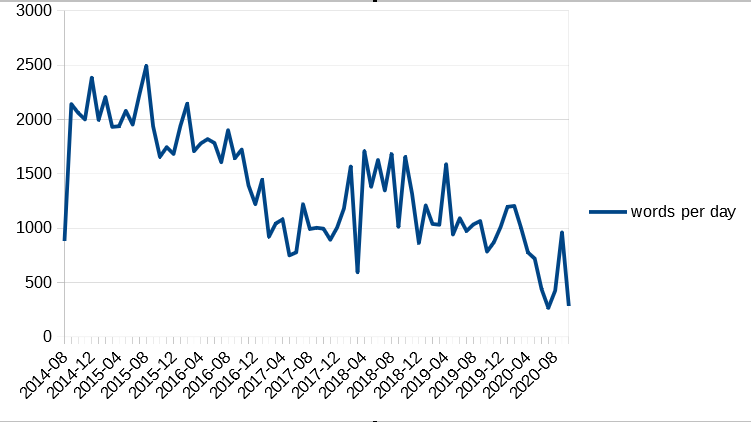

Web Serial Scraper
SUMMARY:
This hobby project began when I asked myself, "how long is The Gods Are Bastards, one of my favorite web serials?" So I spent an afternoon writing and testing some Python to produce a SQLite database file containing the entire text, along with metadata like time of posting, wordcount, book, volume, and more.
(For the uninitiated, a web serial is longform prose fiction, like a novel, except published serially online- that is to say, it is posted chapter by chapter, one at a time. Among the format's common idiosyncrasies is being a great deal longer than normal books and book series. We'll come back to that later.)
DETAILS:
As a programmer, I don't believe in "favorite languages" or other such nonsense. Languages are tools; they are more fit for certain purposes and less fit for others. In this instance, I needed a script that I would only need to run once and likely never again, which suggested Python as the most suitable tool for the job. The fact it would require web scraping sealed the deal; I'm sure other languages are perfectly capable of web scraping with the correct libraries, but Python's web scraping capabilities are what I know, and have been perfectly satisfactory for my needs so far.
Early on in the project, I knew that I'd want more data to work with than merely a single final wordcount. I wasn't entirely sure what data I would want, and so I went with the most overkill, catch-all solution I could find: a SQLite database. SQLite is a variant on SQL that appealed to me for one simple reason: it didn't require any complicated setup with clients and servers. I just created a SQLite .db file in the right directory, pointed my script at it, and let it run.
After getting SQLite set up, I could work on gathering the raw data via a Python library called BeautifulSoup. I have no idea why it's called that; programmers are weird, as I'm sure you've noticed. With BeautifulSoup, however, I could hand Python a URL, and get back an entire webpage in a single easy-to-handle object, and then, with some careful tweaking and selection, pare the webpage down to the text of the chapter on the page- the core data we care about.
With that text in hand, I could pass it to the SQLite database, along with metadata gathered from the rest of the page- what book the chapter belongs to, what volume it's a part of, what date it was posted on, whether or not it's a bonus chapter that doesn't belong to any book in particular, and most pertinent to my original brief, the chapter's individual wordcount.
Now that my script was creating and stocking my SQLite database, I was done... with Python. A SQLite database without any SQL code is useless. So I set about writing some queries, which I'll reproduce here alongside some translations:
QUERIES:
SELECT SUM(wordcount) FROM chapters;
"Give me the total wordcount of the entire story."
Result: 3,104,829.
(I wasn't joking when I said these things were long.)
SELECT SUM(wordcount) FROM chapters WHERE isBonus = 0;
"Give me the wordcount of the entire story, without counting bonus chapters."
Result: 2,758,681.
SELECT SUM(wordcount) FROM chapters WHERE isBonus = 1;
"Give me the wordcount of the entire story, only counting bonus chapters."
Result: 346,148.
SELECT COUNT(*), SUM(wordcount), STRFTIME('%Y', datePosted) AS year, MIN(book), MAX(book), MIN(date(datePosted)), MAX(date(datePosted)) FROM chapters GROUP BY year ORDER BY year;
"For every year in chronological order, give me the number of chapters released, the year, the first book that was worked on, the last book that was worked on, the first day that was posted on, and the last day that was posted on."
select book, count(*) as "chapters", sum(wordcount) as "wordcount", (sum(wordcount) / count(*)) as "average chapter length", min(date(datePosted)) as "first post", max(date(datePosted)) as "last post", cast((max(julianday(datePosted)) - min(julianday(datePosted))) as int) as "days long", (cast(cast((max(julianday(datePosted)) - min(julianday(datePosted))) as int) as real) / count(*)) as "days per chapter", (sum(wordcount) / strftime('%m', date(datePosted,'start of month','+1 month','-1 day'))) as "words per day" from chapters group by book order by book;
"For each book in ascending order, tell me how many chapters were in that book, the wordcount of that book, the average chapter's wordcount, the date the first chapter was posted on, the date the last chapter was posted on, how many days on average were between each chapter, and how many words were written on the average day."
At one point, wanting to have a graphical representation of some data, and being unwilling to look at the documentation for Python's graphing libraries, I exported a SQLite result set to an Excel spreadsheet, and made a graph there. The following graph shows the average words per day for each month in chronological order.

SOURCE CODE:
Attached here, at the bottom of the page, is my source code.